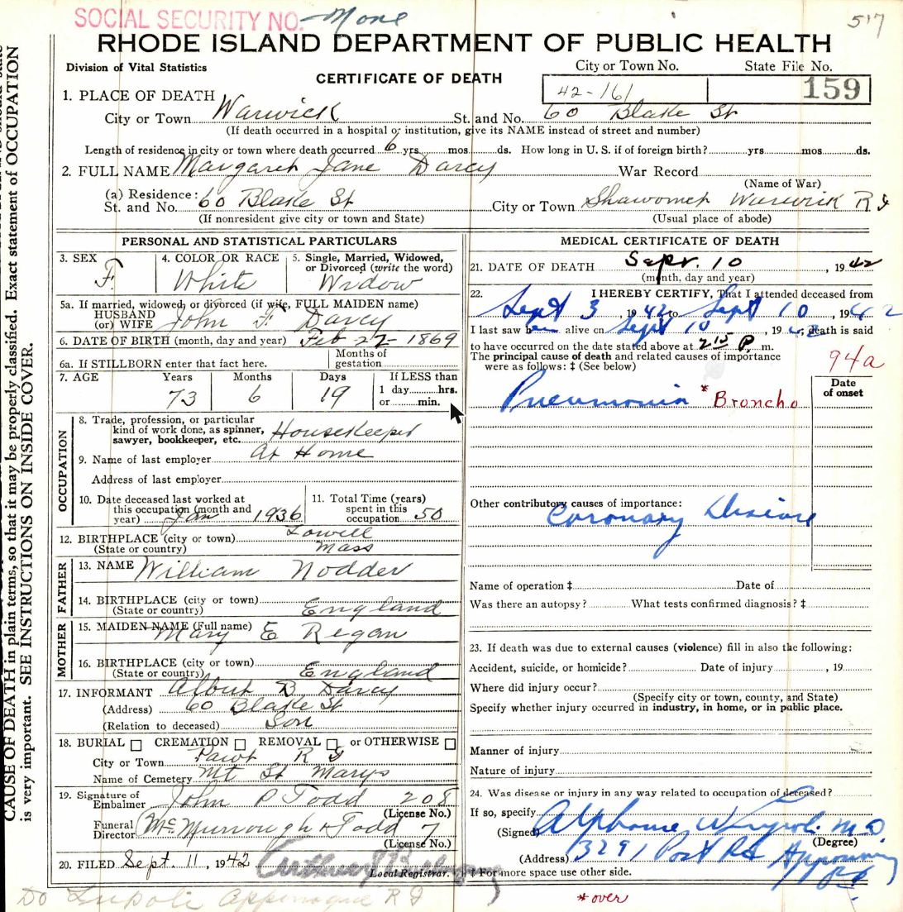

Death certificate of Margaret Jane (Nodder) Darcy, Constance’s grandmother
Rhode Island Death Registrations and Records, 1852-1946; Warwick certificates, 1942 Aug–Dec, image 293 of 466

The original record, as it appears in the register or index.
What this document is
A death record kept by the state of Rhode Island.
What it says
Rhode Island certificate of death, Warwick no. 42-161, state file 159. Margaret Jane Darcy died at 60 Blake Street, Warwick (her son Albert’s house), on September 10, 1942, at 2:15 p.m., after six years’ residence there. White, widow of John F. Darcy. Born February 22, 1869, at Lowell, Massachusetts; age 73 years, 6 months, 19 days. Occupation housekeeper, at home, for 50 years, last worked June 1936. Father William Nodder, born England. Mother’s maiden name Mary E. Regan, born England. Informant Albert B. Darcy, son, 60 Blake Street. Cause: bronchopneumonia, with coronary disease contributing; attended from September 3 by Dr. Alphonse Wigrol(?) of 3291 Post Road, Apponaug. Burial Mount Saint Mary’s, Pawtucket; funeral directors McMurrough & Todd. Filed September 11, 1942.
Place
60 Blake Street, Shawomet, Warwick, Rhode Island
How it was read
Read from the certificate image. The physician’s surname is hard to read.